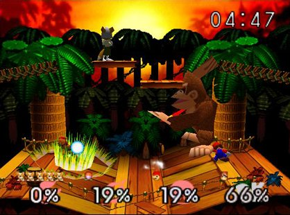

Super Smash Bros. is a game series featuring a cast (primarily) composed of Nintendo characters. Although its creator, Masahiro Sakurai, may not have intended it, Smash inspired an entirely new genre of 2D fighting games - the platform fighter. For the purpose of this explanation, I will be referencing the mechanics of the original Super Smash Bros., which was released on the Nintendo 64 in 1999.
Pictured above is a screenshot from Street Fighter V, a series which is widely regarded to be the forefront of 2D fighters. Although the heads-up display (HUD) and stages vary from different games, onlookers are treated to two main features:
In comparison, here's a screenshot of the original Super Smash Bros (SSB64).
In stark contrast to the screenshot from Street Fighter V (SFV), the two largest differences (other than the disparity in graphics and number of characters on the screen) are that there are no life bars and combat takes place on multiple platforms (as seen by characters standing on different sections of the screen). To the casual viewer, these two differences may hold no significance whatsoever. However, to anyone who has played both games, these two simple differences have created entirely different sets of mechanics for both games.
As a precursory look at the sheer number of differences between SSB64 and SFV, here's a list of just a few items:
This is just a precursory glance over the differences between the two games - as you may guess, there are many more factors which lead to drastically different gameplay. SSB64 gave birth to many other platform fighters, including its successor, Super Smash Bros. Melee. Until next time, check out the Wikipedia page for Super Smash Bros. for more information.